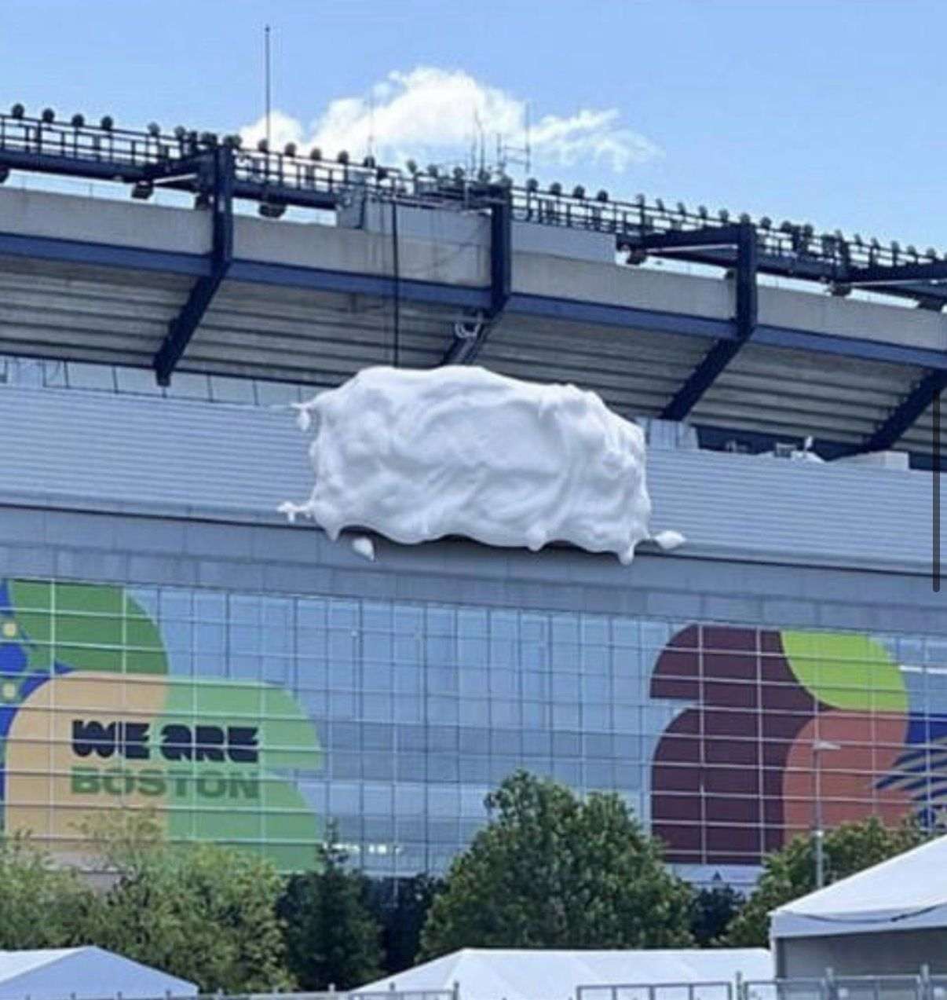

There is a difference between generating conversation and generating recognition. Both can be useful, but only one builds a lasting advantage.
A photograph of a covered stadium sign offers a useful illustration. If people can still identify the brand, familiar shapes, colours and accumulated memory are doing the work. If they cannot, the result is simply a guessing game.

Distinctive assets are not a shortcut. They are the result of making clear choices, then repeating them with patience. The colours, shapes, language and behaviours that matter need time to become familiar.
Build the memory before the moment
Brand building and marketing work together. Marketing can create a moment. Brand gives that moment a recognisable owner.
Conversation is valuable. Recognition is what makes it compound.
If this raises questions about your own brand, you’re welcome to email Michael.